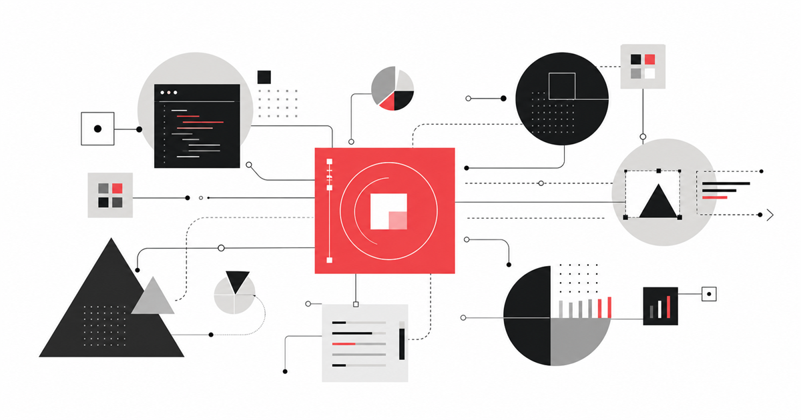

洞察數位科技面試｜公司情報 + AI 工程新手包
針對洞察數位科技（Insightdigit）軟體 / AI 工程師職位。一週搞懂公司在做什麼、四個 AI 產品的定位、AI 工程必懂三件事、自我介紹怎麼講不卡。

💡 這份在解什麼
新手最常的問題：「我什麼都不會，要怎麼準備？」答：先把『這家公司在做什麼』搞清楚，比刷 100 題演算法重要。因為面試官最愛問的是「為什麼想加入我們」，而不是「LeetCode 你刷幾題」。
這份替你濃縮了洞察數位科技的六大服務、四個自家 AI 產品、技術主張，加上 AI 工程必會的 LLM / RAG / Agent 基礎概念，最後給你自我介紹 4 段腳本跟反問面試官的 5 題清單。
🏢 洞察數位 一頁速覽
| 項目 | 內容 |
|---|---|
| 歷史 | 10 年以上製作經驗 |
| 規模 | 400+ 案例、100+ 產業 |
| 定位 | 軟體開發 + 網站設計（隸屬集團，含行銷/電商分公司） |
| 技術主張 | 「絕非以眾多外掛、插件處理製作網站，而是以 coding 方式直接開發」 |
| 核心團隊 | 各大知名公司出身的專案總監、業務總監、技術長 |
| 目標客戶 | 中小企業、品牌、新創、特定行業（醫療/法律/金融/房地產/餐飲/旅遊） |
| 承諾 | 後續維護完全免費 |
🎯 面試金句：「我看到貴公司強調用 coding 而非套版，這跟我想真正深入學寫程式的方向一致。」
🛠️ 六大服務模組
網站開發 Web Design
客製建站 · 響應式 · 金流串接強調品牌形象、SEO、電商功能。對接客戶整合行銷需求。
軟體開發 Software Dev
客製軟體 · API 串接客製軟體 + API 串接兩大主軸。流程：預約→諮詢→需求→開發→驗收→訓練。
拓荒者 Pioneer
自家產品 · 爬蟲網路爬蟲軟體：自定義爬取、資料清洗、即時更新、多格式導出。
推測技術棧：Python (Scrapy/BeautifulSoup) 或 Node.js + 資料清洗管線
生產者 Producer ⭐
自家產品 · AI 內容AI 內容生產系統：自動生成部落格 / 產品描述 / 新聞稿 / 配圖。
推測技術棧：LLM API（OpenAI/Anthropic）+ 圖片生成 + Prompt 工程系統
追蹤者 Tracker
自家產品 · 行為追蹤網站互動追蹤：IP 追蹤 + 使用者登錄資料追蹤 + Cookie 追蹤三大技術。
推測技術棧：JS Tracking SDK + 後端事件處理 + 即時分析儀表板
建造者 Builder
自家產品 · AI 建站AI 自動生成網站：依需求 + 模板智能建站，深度學習持續優化。
推測技術棧：Template Engine + LLM 內容生成 + 自動 SEO
🤖 AI 工程必會三件事
LLM 是什麼（30 秒講完版）
LLM = Large Language Model。本質就是強大的「下一個字預測機」，因為訓練資料夠大，能展現推理、寫程式、翻譯能力。代表：GPT、Claude、Gemini、Llama。
RAG（檢索增強生成）
「讓 AI 在回答前先翻資料庫找相關資料，再根據找到的資料回答。」流程：文件切塊 → 向量化 → 存向量 DB → 用戶問題向量化 → 找最相似 N 個 → 塞 prompt → LLM 答。重點不是 AI 多聰明，是「翻得準不準」。
AI Agent（ReAct 循環）
能自己規劃 + 執行多步驟任務的 AI。核心循環：Reason 思考 → Act 行動 → Observe 觀察 → 回到 Reason。差別：一般 LLM 你問一句它答一句，Agent 給它目標它自己分解步驟、呼叫工具、檢查結果。
🎯 面試官最可能問的 8 題
- Q1. 為什麼想加入洞察數位？「我看了你們官網，最吸引我的是兩件事：第一，你們強調 coding 而非套版，工程文化扎實。第二，你們同時做客製案件跟四個 AI 產品，能接觸端對端開發。我自己大量用 AI 工具開發小工具，方向很合。」
- Q2. 你對我們四個產品的看法？每個產品準備：解決什麼痛點、你會怎麼改進、市場競品有誰。例如生產者競品：Jasper / Copy.ai / Notion AI。建造者競品：Wix ADI / Durable / 10Web。
- Q3. 客製案件 vs 自家產品開發你想做哪個？誠實答：「短期適合先做客製累積經驗，需求明確、有 deadline 能快速成長。長期希望參與 AI 自家產品線，特別是生產者或建造者。」
- Q4. 你怎麼用 AI 工具寫程式？「我大量用 Claude / Cursor / Copilot 加速開發。AI 給的不是寫好的程式碼，是設計思路跟 boilerplate。我會自己讀懂、修改、debug，不會盲信。AI 不能理解業務邏輯，那塊還是工程師責任。」
- Q5. 你接過什麼專案？新手版：誠實但不貶低。「目前在做 X 專案，用了 Y 技術。雖然規模不大，但完整跑過從需求到部署。」如果什麼都沒做過：「這段時間在密集學基礎，正在做 side project，預計 X 月完成。」
- Q6. 你怎麼處理需求不清楚的客戶？「我會做三件事：把需求拆成 user story 跟客戶確認、做 mockup 或流程圖讓客戶看到具體樣貌、分階段交付每階段都有 demo。即使溝通有落差也能早期修正。」
- Q7. RAG 跟 Fine-tuning 差別？「RAG 給 context，模型本身不變，新資料容易加。Fine-tuning 改模型本身，貴又難維護。99% 場景用 RAG 解，特殊風格才用 fine-tune。」
- Q8. 期望薪水？新手：「根據 104 跟我朋友打聽，這個職位新手約 4-5 萬，我覺得 4.5 萬左右合理，具體看 onboarding 跟 benefit 整體。」
📝 自我介紹 90 秒範本（直接背）
身分定位
「您好，我是 [姓名]，目前是 [背景]，主要技術方向是 [後端 Python / 前端 React / AI 應用 / 全端]。」
技能強項 + 一個具體專案
「我比較熟悉的是 X、Y、Z。最近做的一個小專案是 [具體專案 + 技術 + 心得]。雖然規模不大，但完整跑過從需求到部署的流程。」
你跟這份工作的連結
「我看到貴公司有四個自家 AI 產品，特別是生產者跟建造者，這跟我練習 AI 應用方向高度重疊。我知道 LLM 整合不是接 API 就好，還要處理 prompt、cost、hallucination 這些細節。希望能在實際產品上把經驗深化。」
你想從這份工作得到什麼
「短期希望在客製案件累積完整產品經驗，從需求到部署的全流程都跑過。長期希望成為能獨立負責 AI 產品功能的工程師。」
❓ 必反問面試官的 5 題
- 1. 工作內容「請問這個職位主要會接觸客製案件還是自家產品線？比例大概是？」
- 2. 培訓 / Mentor「公司 onboarding 通常多久？前三個月新人會被分到什麼任務？我這個職位的 mentor 是什麼背景？」
- 3. 技術棧「我看到貴公司強調 coding 而非套版，請問常用的技術棧大概是？」
- 4. 產品方向「拓荒者、生產者、追蹤者、建造者這四個產品線，目前哪個是公司比較重押的方向？」
- 5. 流程（最後問）「請問接下來的面試流程是？我什麼時候會收到結果？」
禁問：「員工福利？」「會不會 WFH？」「年假幾天？」這些等 offer 來後再問 HR。
⚠️ 新手最常踩的 5 個雷
- ❌ 完全沒看公司官網✅ 至少看完 services / agency / 四個產品頁。面試官會直接問「你看過我們什麼產品？」
- ❌ 自我介紹講 5 分鐘流水帳✅ 控制 90 秒，4 段結構（身分 / 技能 / 跟工作連結 / 期待）。多餘細節等被問再講。
- ❌ 隱瞞自己用 AI 寫程式✅ 大方承認！這是新世代工程師優勢。重點是說明你「會看懂、會修改、不盲信」。
- ❌ 沒準備反問✅ 沒反問會被打負分。至少準備 4 題，最後一定要問「什麼時候收到結果」。
- ❌ 期望薪水亂喊或不敢喊✅ 新手約 4-5 萬。直接給範圍 + 「具體看整體 package」。
📋 面試前一晚 Checklist
看過官網所有頁面（services / agency / 四個產品頁）
自我介紹腳本至少模擬 3 次
想好要反問哪 4 題
想好「為什麼想加入」「優缺點」「期望薪水」標準答案
準備一個「最近做的專案」可以講 5 分鐘版本
整理 GitHub 或作品集（即使作品很少也要有）
確認交通路線、提早 15 分鐘到
帶筆 + 紙 + 履歷一份備用
📚 延伸資源
📦 配套：NotebookLM 6 媒體版本
📓 完整 NotebookLM 知識包
同樣內容做了 6 種媒體格式：簡報、Podcast、深度報告、資訊圖、閃卡、心智圖。通勤聽 podcast、面試前一晚滑簡報、做閃卡反射訓練。
→ 開啟 NotebookLM 完整版